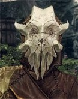

Сквозь сон вы слышите приближающиеся шаги
Вы решили притвориться спящим, чтобы застать их в расплох
— Отлично, лёгкая добыча для наших экспериментов
"Экспериментов? Каких экспериментов?"
— Сейчас...Свяжи его как можно быстрее.
К вам прикоснулся один из этих разбойников. Вы быстро перерезали ему глотку кинжалом и кинули метательный нож в другого. Но тут вас как-будто что-то связало.
— Что за?!
— Прости, друг, но нам нужно твоё тело для экспериментов. А это - один из слабых видов магии, силы Сиэла.
— Магии... Сиэла.. Чего?!
— Ведите его к месту, и тела прихватите тоже.
Попытаться вырваться из невидимых цепей